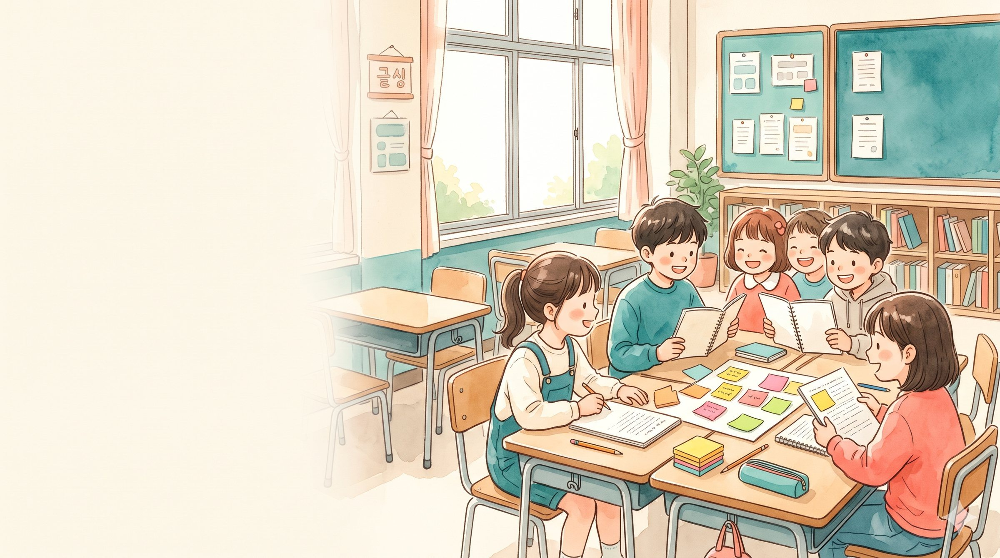
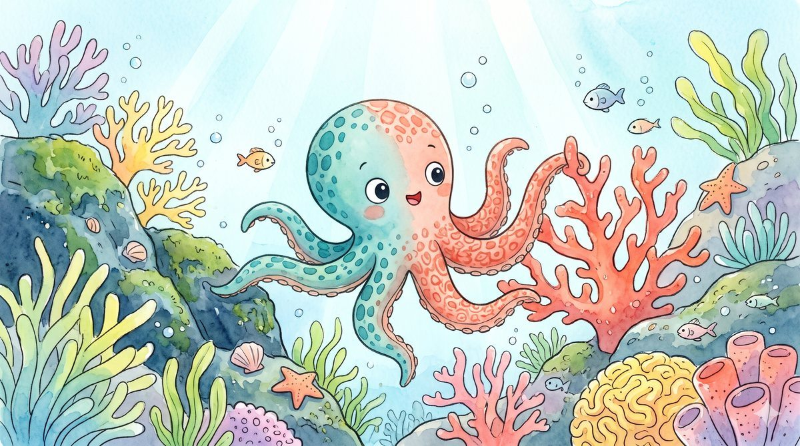
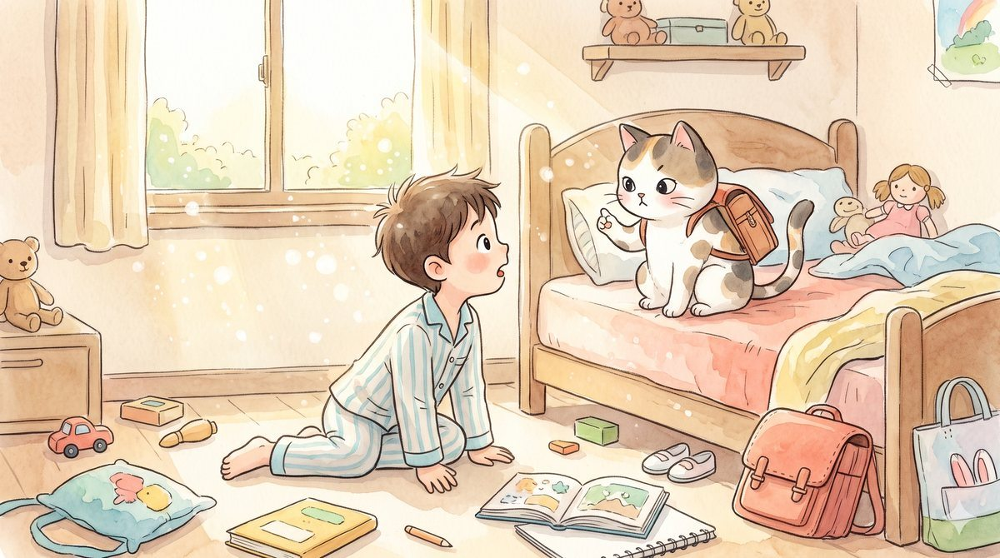

우마시 글나눔 · 5학년 국어
친구의 글을 읽은 내가 건네는
또 하나의 글
도입
친구의 글 · 일상 경험
“나는 처음으로 혼자 김치볶음밥을 만들었다. 조금 짰지만 가족들이 맛있다고 해 주어서 정말 기뻤다.”
A
잘 썼어.
B
재미있어!
C
가족들이 맛있다고 해 줬을 때 정말 뿌듯했겠다. 다음에는 어떤 요리에 도전하고 싶어?
내가 이 글을 썼다면, 어떤 댓글을 받고 싶나요? 왜 그런가요?
댓글은 단순한 칭찬이나 감상평이 아니에요.
친구의 글을 읽고 내 생각을 글쓴이에게 전하는 글이에요.
“그 일을 겪었을 때 정말 속상했겠다. 그래도 다시 도전했다는 점이 인상 깊어.”
“나는 성공하는 게 중요하다고 생각했는데, 네 글을 읽으니 실패하면서 배우는 것도 중요하다는 생각이 들었어.”
“주인공이 마지막에 그런 선택을 한 이유가 궁금해. 다른 선택을 했다면 이야기가 어떻게 달라졌을까?”
중요한 것은 친구의 글을 바탕으로 내 생각을 구체적으로 표현하는 것!
활동 1
글의 종류에 따라 골라 써요
방법 1
나와 비슷한 점 발견하기
방법 2
몰랐던 사실, 독특한 생각
방법 3
질문으로 생각 이어 가기
방법 4
내 관점과 근거 더하기
방법 5
이야기를 넓혀 보기
방법 6
나와 다른 생각 이해하기
방법 7
좋은 표현 콕 집어 말하기
방법 8
더 알아볼 점 찾기
방법 1
나와 비슷한 점을 발견해요
친구의 글 · 일상 경험
“나는 발표할 때마다 긴장한다. 친구들이 나를 쳐다보면 무슨 말을 해야 할지 생각이 나지 않는다. 그래도 이번에는 끝까지 발표를 마쳤다.”
이런 댓글을 달 수 있어요
나도 발표할 때 긴장해서 네 마음이 이해돼. 그래도 끝까지 발표를 마쳤다니 정말 뿌듯했을 것 같아.
나도 긴장되지만, 한 번 발표하고 나면 다음에는 조금 나아지더라.
발표를 잘하는 것보다 끝까지 해내는 게 중요하다는 생각이 들었어.
기억해요 ‘나도 그래’에서 끝내지 말고, 어떤 부분에 공감했는지 덧붙여요.
방법 2
몰랐던 사실, 독특한 생각을 찾아요

친구의 글 · 정보 전달 글
“문어는 주변 환경에 따라 몸의 색과 무늬를 바꿀 수 있다. 나는 문어가 바다의 변신 마술사 같다고 생각한다.”
이런 댓글을 달 수 있어요
문어가 몸의 색과 무늬를 바꿀 수 있다는 사실을 처음 알았어. 정말 신기하다!
문어를 ‘변신 마술사’라고 표현한 게 재미있어. 나도 문어를 그렇게 생각하게 됐어.
과학적인 사실에 재미있는 비유를 더하니까 글이 훨씬 기억에 남아.
기억해요 새로운 사실뿐 아니라 재미있는 표현이나 아이디어도 발견할 수 있어요.
방법 3
질문으로 생각을 이어 가요
친구의 글 · 상상하는 글
“나는 무인도에 혼자 남게 된다면 가장 먼저 집을 만들 것이다. 비와 햇빛을 피할 수 있어야 안전하게 지낼 수 있기 때문이다.”
이런 댓글을 달 수 있어요
집을 가장 먼저 만들겠다는 생각이 흥미로워. 집을 만들 재료는 무엇을 사용할 거야?
집을 만든 다음에는 어떤 일을 할 생각이야?
나는 음식을 먼저 구해야 한다고 생각했는데, 안전한 장소를 먼저 만드는 것도 중요하겠네.
기억해요 글에 담긴 내용에서 질문을 찾아요. 대답하기 어렵거나 사적인 질문은 피해요.
방법 4
내 관점과 근거를 더해요
친구의 글 · 주장하는 글
“학교 숙제는 지금보다 줄어들어야 한다. 숙제를 하다 보면 가족과 보내거나 좋아하는 일을 할 시간이 부족하기 때문이다.”
이런 댓글을 달 수 있어요
같은 생각 나도 숙제가 너무 많으면 다른 일을 할 시간이 부족하다고 생각해. 책 읽거나 운동할 시간도 필요해.
다른 생각 나는 숙제가 조금은 필요하다고 생각해. 배운 내용을 스스로 연습할 수 있기 때문이야.
새로운 제안 무조건 줄이기보다 꼭 필요한 숙제와 그렇지 않은 숙제를 구분하면 좋겠어.
기억해요 생각이 달라도 괜찮아요. 친구를 평가하지 말고, 내 생각과 그 이유를 나눠요.
방법 5
이야기를 넓혀 봐요

친구의 글 · 이야기 글
“어느 날 아침, 내가 키우던 고양이가 사람의 말을 하기 시작했다. 고양이는 나에게 오늘 학교에 가지 말라고 말했다.”
이런 댓글을 달 수 있어요
고양이가 왜 학교에 가지 말라고 했는지 궁금해. 다음 이야기가 기대돼!
혹시 학교에 가면 안 되는 특별한 일이 생긴 걸까? 긴장감이 느껴져.
나라면 고양이에게 이유를 먼저 물어볼 것 같아. 너라면 어떻게 할 거야?
기억해요 인물의 행동이나 다음 사건을 상상하며 이야기를 이어 가 봐요.
방법 6
나와 다른 생각을 이해해요
친구의 글 · 생각을 나누는 글
“나는 비 오는 날이 좋다. 우산을 쓰고 걷는 사람들이 영화의 한 장면처럼 느껴지고, 빗소리를 들으면 마음이 편안해지기 때문이다.”
이런 댓글을 달 수 있어요
나는 비가 오면 신발이 젖어서 싫었는데, 너는 빗소리에서 편안함을 느끼는구나.
같은 비를 보고도 사람마다 다르게 느낄 수 있다는 점이 재미있어.
네 글을 읽으니 다음에 비가 올 때는 빗소리를 조금 더 자세히 들어 보고 싶어.
기억해요 생각을 하나로 맞추지 않아도 돼요. 차이를 발견하는 것도 배움이에요.
방법 7
좋은 표현을 콕 집어요
친구의 글 · 마음을 표현한 글
“내 마음은 마치 뚜껑이 닫힌 냄비 같았다. 속에서는 화가 부글부글 끓었지만 겉으로는 아무렇지 않은 척했다.”
이런 댓글을 달 수 있어요
화가 난 마음을 냄비에 비유한 표현이 재미있어. 어떤 기분인지 더 잘 상상할 수 있었어.
마음속과 겉으로 보이는 모습이 다르다는 점이 인상 깊어.
감정을 직접 설명하는 대신 비유로 나타내서 글이 더 생생하게 느껴졌어.
기억해요 ‘잘 썼어’ 대신 어떤 표현이나 구성이 좋았는지 콕 집어 말해요.
방법 8
더 알아볼 점을 찾아요
친구의 글 · 주장하는 글
“학교에서 일회용 컵 사용을 줄이면 쓰레기를 줄이는 데 도움이 된다. 우리 반에서도 개인 컵을 사용하면 좋겠다.”
이런 댓글을 달 수 있어요
실천 방법 좋은 생각이야. 다만 컵을 씻는 방법도 함께 생각해 보면 좋겠어.
함께 생각할 문제 우리 반에서 개인 컵 사용을 시작한다면 어떤 약속을 정해야 할까?
더 조사할 점 학교에서 일회용 컵을 실제로 얼마나 쓰는지 조사하면 주장을 더 잘 뒷받침할 수 있겠어.
기억해요 근거를 더하거나, 실천 방법을 제안하거나, 더 조사할 점을 찾아봐요.
활동 2
재미있어.
주인공이 갑자기 투명 인간이 되는 장면이 재미있어. 나라면 어떻게 행동할지 상상하게 됐어.
나도 그래.
나도 결과보다 노력하는 과정이 중요하다고 생각해. 열심히 준비했던 경험이 있기 때문이야.
잘 썼어.
처음에는 평범한 이야기인 줄 알았는데 마지막에 반전이 있어서 인상 깊었어.
길게 쓰지 않아도 괜찮아요. 글의 구체적인 부분 + 내 생각이면 충분해요!
그대로 쓰지 않고
내 말로 바꿔도 좋아요
활동 2
친구의 글
“학교 숙제는 지금보다 줄어들어야 한다.”
처음 쓴 댓글
“그건 아닌 것 같아.”
생각을 더한 내 댓글
친구의 글
“사이가 나빴던 주인공이 마지막에 친구를 도와주었다.”
처음 쓴 댓글
“궁금해.”
생각을 더한 내 댓글
친구의 글
“우리 반에서 개인 컵을 사용하면 좋겠다.”
처음 쓴 댓글
“좋은 생각이야.”
생각을 더한 내 댓글
칭찬하는 법만큼
다른 생각을 말하는 법도 중요해요
“학교에서는 쉬는 시간을 지금보다 길게 해야 한다.”
이렇게 말하면 속상해요
“그건 말도 안 돼.”
이렇게 말해 봐요
“나는 쉬는 시간이 길어지면 수업 시간이 부족해질 수도 있다고 생각해. 대신 쉬는 시간을 어떻게 활용할지 함께 정하면 좋겠어.”
“나는 혼자 여행하는 것이 가장 좋다.”
이렇게 말하면 속상해요
“왜 혼자 가? 재미없겠다.”
이렇게 말해 봐요
“나는 친구들과 함께 여행하는 걸 좋아하는데, 혼자 여행하면 어떤 점이 가장 좋은지 궁금해.”
“요즘 새로운 환경에 적응하는 것이 조금 어렵다.”
이렇게 말하면 속상해요
“무슨 일이 있었는데? 자세히 말해 봐.”
이렇게 말해 봐요
“새로운 환경에 적응하는 게 쉽지 않을 수 있겠어. 네가 편안하게 지낼 수 있기를 바라.”
활동 3
5분
1
마음에 남는 문장에 밑줄을 그어요
2
8가지 방법 중 어울리는 것을 골라요
3
구체적인 부분과 내 생각을 담아요
4
받은 댓글을 읽고 기분을 이야기해요
친구 글의 구체적인 부분을 짚었나요?
내 생각이나 질문이 담겨 있나요?
친구가 읽었을 때 기분 좋게 받아들일 수 있나요?
정리
친구가 내 글을 읽고 어떤 댓글을 달아 주면
가장 의미 있을까요?
①
②
③
댓글은 친구의 글을
평가하는 말이 아니라,
친구의 글을 읽은 내가 건네는
또 하나의 글이에요.
오늘 우마시 글나눔에서,
친구에게 내 생각을 건네 보세요.